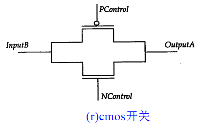

キーワード：MOS, CMOS, 双方向スイッチ, PAD
スイッチレベルモデリングは、ゲートレベルモデリングよりも低い抽象レベルの設計です。ごく稀に、設計者はトランジスタを設計の基本モジュールとして使用することを選ぶ場合があります。回路設計の複雑さと関連する先進的なツールの出現に伴い、スイッチベースのデジタル設計は徐々に衰退していきました。現在、Verilog は論理値 0、1、x、z を関連する駆動強度として使用するデジタル設計機能のみを提供しています。そのため、Verilog 内のトランジスタも導通または遮断のスイッチとしてのみ扱われます。
MOS スイッチ
MOS スイッチには2種類あり、以下のキーワードで宣言します：
nmos（N 类型 MOS 管） pmos（P 类型 MOS 管） rnmos （带有高阻抗的 NMOS 管） rpmos（带有高阻抗的 PMOS 管）
MOS トランジスタはスイッチロジックをモデリングするために使用され、データは入力から出力へ流れ、適切な設定によってデータフローをオン/オフできます。
インピーダンス付きの MOS トランジスタは、ソースからドレインへのインピーダンスが高く、信号を伝達する際に信号の強度を弱めます。
MOS トランジスタスイッチの構造図は以下の通りです。

インスタンス化する際、MOS トランジスタの最初のポートは出力端子、2番目のポートはデータ入力端子、3番目のポートは制御入力端子です。
例
pmos pmos1 (OUTX, IN1, CTRL1) ;
//no instantiation name
nmos (OUTX1, IN1, CTRL2) ;
MOS トランジスタの真理値表は以下の通りで、三態ゲートと非常に似ています。
| nmos | 制御端子 | pmos | 制御端子 | |||||||
|---|---|---|---|---|---|---|---|---|---|---|
| 0 | 1 | x | z | 0 | 1 | x | z | |||
| 0 | z | 0 | 0/z | 0/z | 0 | 0 | z | 0/z | 0/z | |
| 1 | z | 1 | 1/z | 1/z | 1 | 1 | z | 1/z | 1/z | |
| x | z | x | x | x | x | x | z | x | x | |
| z | z | x | x | x | z | x | z | x | x |
CMOS スイッチ
CMOS スイッチはキーワード cmos と rcmos（高インピーダンス付き）で宣言します。
CMOS には1つのデータ出力、1つのデータ入力、および2つの制御入力があり、構造図は以下の通りです：

信号 PControl と Ncontrol は通常、相補的です。信号 Ncontrol が 1 で PControl が 0 のとき、スイッチは導通します。信号 Ncontrol が 0 で PControl が 1 のとき、スイッチの出力はハイインピーダンスになります。CMOS スイッチは NMOS と PMOS スイッチの組み合わせと見なすことができます。
インスタンス化する際、CMOS トランジスタの最初のポートは出力端子、2番目のポートはデータ入力端子、3番目のポートは Ncontrol 制御入力端子、4番目のポートは Pcontrol 制御入力端子です。
CMOS スイッチのインスタンス化形式は以下の通りです。
例
cmos c1 (OUTY, IN1, NCTRL, PCTRL) ;
//no instantiation name
cmos (OUTY1, IN1, NCTRL, PCTRL) ;
CMOS は NMOS と PMOS スイッチの組み合わせと見なせるので、これら2種類の MOS スイッチを使って CMOS スイッチを構築することもできます。次のようになります：
例
nmos n2 (OUTY, IN1, NCTRL) ;
pmos p2 (OUTY, IN1, PCTRL) ;
CMOS の真理値表は MOS スイッチと似ています。Ncontrol と Pcontrol 信号の相補性に注意してください。
双方向スイッチ
NMOS、PMOS、CMOS スイッチゲートはすべてドレインからソースへ導通し、方向は一方向です。Verilog には双方向に導通するスイッチデバイスも用意されており、データは双方向に流れ、両側の信号が駆動信号になります。
双方向スイッチとそのインピーダンスモードのキーワード宣言は以下の通りです：
tran tranif1 tranif0 rtran rtranif1 rtranif0
双方向スイッチの構造図は以下の通りです：

tran スイッチは2つの信号間の直接のバッファであり、inout1 または inout2 のどちらも駆動信号にできます。
tranif1 は、control 信号が 1 のときのみ、スイッチ両側の信号が導通します。control が 0 のとき、2つの信号は遮断され、駆動源がある信号は駆動源と同じ信号値を保持し、駆動源がない信号はハイインピーダンス状態になります。
tranif0 も同様です。
そのため、双方向スイッチはバスや信号間の分離によく使用されます。
インスタンス化する際、双方向スイッチの最初の
2つのポートはデータ端子、3番目のポートは control 制御入力端子です。
双方向スイッチのインスタンス化の例は以下の通りです：例
//no instantiation name
tranif1 (inout1, inout2, control) ;
電源とグラウンド
トランジスタレベル回路には、ソース（Vdd、論理1）とグラウンド（Vss、論理0）が必要で、それぞれキーワード supply1 と supply0 で定義します。使用方法は以下の通りです：
例
supply0 GND ;
wire siga = VDD ; //siga is connected to logic 1
wire sigb = GND ; //sign is connected to logic 0
PAD モデルシミュレーション
『Verilog チュートリアル』の『5.1 Verilog モジュールとポート』の節で、PAD モデルの作成とシミュレーションについて説明しました。以下では、三態ゲートを使用して PAD モデルを再構築し、プルアップ/プルダウン機能を固定し、双方向スイッチを使用して PAD の接続性をテストします。
三態ゲートを使用して pullup 機能を持つ pad モデルを作成したものを以下に示します。pulldown 機能の pad モデルにするには、コメントを切り替えるだけです。
例
//DIN, pad driver when pad configured as output
//OEN, pad direction(1-input, o-output)
input DIN, OEN ,
inout PAD ,
//pad load when pad configured as input
output DOUT
);
//input:(not effect pad external input logic), output: DIN->PAD
bufif0 (PAD, DIN, OEN) ; //0-output
bufif1 (DOUT, PAD, OEN) ; //1-input
pullup (PAD);
//pulldown (PAD); //pulldown
endmodule
双方向スイッチを使用して PAD IO の接続性を制御する testbench は次のように記述します。
テスト手順は、PAD0/1 を相互接続し、次に PAD0 を出力、PAD1 を入力として、PAD0 を駆動し、PAD1 の値を読み取ります。次に、両者の方向をそれぞれ反転させ、PAD1 を駆動して PAD0 の値を読み取ります。
PAD2/3 のテスト手順は完全に同じです。
例
module test ;
parameter PULL_UP = 1 ;
parameter PULL_DOWN = 0 ;
parameter IO0_OUT = 0 ;
parameter IO1_OUT = 1 ;
parameter IO2_OUT = 2 ;
parameter IO3_OUT = 3 ;
parameter IO0_IN = 0 ;
parameter IO1_IN = 1 ;
parameter IO2_IN = 2 ;
parameter IO3_IN = 3 ;
reg [3:0] DIN, OEN ;
wire [3:0] DOUT ;
wire [3:0] PAD ;
//test connection control, using tranif1
reg [1:0] con_ena ;
tranif1 (PAD[0], PAD[1], con_ena[0]);
tranif1 (PAD[2], PAD[3], con_ena[1]);
reg err = 0;
task test_io_conn;
//test pull
input pull_type ;
//test conn
input [1:0] xout ; //output postion
input [1:0] yin ; //output postion
DIN[xout] = ~pull_type ;
# 20 ;
if (DOUT[yin] != ~pull_type) begin
$display("write value and get value is: %h, %h", ~pull_type, DOUT[yin]);
err |= 1 ;
end
DIN[xout] = pull_type;
# 20 ;
if (DOUT[yin] != pull_type) begin
$display("write value and get value is: %h, %h", pull_type, DOUT[yin]);
err |= 1 ;
end
endtask
initial begin
con_ena = 2'b01 ;
OEN = 4'b1111 ;
#13 ;
//test between io0/io1
OEN[0] = 0 ;
OEN[1] = 1 ; //gpio0 -> gpio1
test_io_conn(PULL_UP, IO0_OUT, IO1_IN);
OEN[1] = 0 ;
OEN[0] = 1 ; //gpio0 -> gpio1
test_io_conn(PULL_UP, IO1_OUT, IO0_IN);
OEN = 4'b1111 ;
con_ena = 2'b10 ;
OEN[2] = 1'b0 ;
OEN[3] = 1'b1 ;
test_io_conn(PULL_DOWN, IO2_OUT, IO3_IN);
OEN[3] = 1'b0 ;
OEN[2] = 1'b1 ;
test_io_conn(PULL_DOWN, IO3_OUT, IO2_IN);
end
PADUP u_pad_up0( DIN[0], OEN[0], PAD[0], DOUT[0]) ;
PADUP u_pad_up1( DIN[1], OEN[1], PAD[1], DOUT[1]) ;
PADDOWN u_pad_down3( DIN[2], OEN[2], PAD[2], DOUT[2]) ;
PADDOWN u_pad_down4( DIN[3], OEN[3], PAD[3], DOUT[3]) ;
initial begin
forever begin
#100;
//$display("---gyc---%d", $time);
if ($time >= 1000) begin
$finish ;
end
end
end
endmodule // test
シミュレーション結果は以下の通りです。
図からわかるように、13ns 以内では、4つの PAD がすべて入力の場合、PAD 値はすべて pull 機能に対応しています。つまり、PAD0-1 はすべてプルアップ機能を持ち、PAD2-3 はすべてプルダウン機能を持ちます。
13-53ns 以内では、PAD0 が出力、PAD1 が入力であり、接続されているため、両者の論理値の変化は一致します。同様に、53ns-93ns 以内では、PAD1 が出力、PAD0 が入力であり、接続状態では両者の論理値も一致します。これは、PAD0/1 の入出力機能が正常であることを示しています。
PAD2/3 の結果も同様であるため、ここでは説明を省略します。